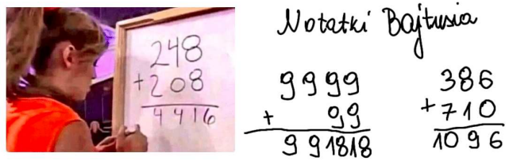

<html>
<head>
	<meta http-equiv="Content-Type" content="text/html; charset=utf-8">
	<link rel=stylesheet href='http://www.lydsy.com/JudgeOnline/include/hoj.css' type='text/css'>
</head>
<body>
<center>
<div style="width:90%; text-align:left">

</div>
<table width=96%> 
	<tr align="center" class='hd' valign="top">
				<th><a href="http://www.lydsy.com/JudgeOnline/faqs.php">F.A.Qs</a></th>
		<th><a href="http://www.lydsy.com/JudgeOnline/">Home</a></th>
		<th><a href="http://www.lydsy.com/JudgeOnline/bbs.php">Discuss</a></th>
		<th><a href="http://www.lydsy.com/JudgeOnline/problemset.php">ProblemSet</a></th>
		<th><a href="http://www.lydsy.com/JudgeOnline/status.php">Status</a></th>
		<th><a href="http://www.lydsy.com/JudgeOnline/ranklist.php">Ranklist</a></th>
        <th><a href="http://www.lydsy.com/JudgeOnline/contest.php">Contest</a></th>
        <th><a href="http://begin.lydsy.com/JudgeOnline">入门OJ</a></th>
		<th><a href="http://www.lydsy.com/JudgeOnline/loginpage.php">Login</a></th><th><a href="http://www.lydsy.com/JudgeOnline/registerpage.php">Register</a></th>		</tr>
</table>
</center>
<title>Problem 5544. -- [PA2019]A + B</title><center><h2>5544: [PA2019]A + B</h2><span class=green>Time Limit: </span>1 Sec&nbsp;&nbsp;<span class=green>Memory Limit: </span>256 MB<br><span class=green>Submit: </span>26&nbsp;&nbsp;<span class=green>Solved: </span>22<br>[<a href='http://www.lydsy.com/JudgeOnline/submitpage.php?id=5544'>Submit</a>][<a href='http://www.lydsy.com/JudgeOnline/problemstatus.php?id=5544'>Status</a>][<a href='http://www.lydsy.com/JudgeOnline/bbs.php?id=5544'>Discuss</a>]</center><h2>Description</h2><div class=content><div>在列竖式计算两个十进制数的和的时候，人们可能会错算成这样：</div>
<div></div>
<div><a href="https://www.lydsy.com/JudgeOnline/upload/5544.png"></a></div>
<div></div>
<div>在图里的左边，248+208被错算成了4416。</div>
<div></div>
<div>给定正整数n，问有多少对非负整数a,b满足a+b会被错算成n。请注意a可以等于b，且a=1,b=2和a=2,b=1是两种不同的方案。</div>
<p></p></div><h2>Input</h2><div class=content><div>第一行包含一个正整数n(1&lt;=n&lt;10^18)。</div>
<p></p></div><h2>Output</h2><div class=content><div>输出一个整数，即满足条件的a,b的数量。</div>
<p></p></div><h2>Sample Input</h2>
			<div class=content><span class=sampledata>112</span></div><h2>Sample Output</h2>
			<div class=content><span class=sampledata>50</span></div><h2>HINT</h2>
			<div class=content><p></p></div><h2>Source</h2>
			<div class=content><p><a href='http://www.lydsy.com/JudgeOnline/problemset.php?search=%E9%B8%A3%E8%B0%A2Claris%E4%B8%8A%E4%BC%A0'>鸣谢Claris上传</a></p></div><center>[<a href='http://www.lydsy.com/JudgeOnline/submitpage.php?id=5544'>Submit</a>][<a href='http://www.lydsy.com/JudgeOnline/problemstatus.php?id=5544'>Status</a>][<a href='http://www.lydsy.com/JudgeOnline/bbs.php?id=5544'>Discuss</a>]</center><br>
<a href="http://www.lydsy.com/JudgeOnline/"><span class=red>HOME</span></a>
<a href="javascript:history.go(-1)"><span class=red>Back</span></a>

<hr>
<center>
	<div class="footer">
			<a href="http://www.lydsy.com/JudgeOnline/setlang.php?lang=ko">한국어</a>&nbsp;
		<a href="http://www.lydsy.com/JudgeOnline/setlang.php?lang=cn">中文</a>&nbsp;
		<a href="http://www.lydsy.com/JudgeOnline/setlang.php?lang=fa">فارسی</a>&nbsp;
		<a href="http://www.lydsy.com/JudgeOnline/setlang.php?lang=en">English</a>&nbsp;
		<a href="http://www.lydsy.com/JudgeOnline/setlang.php?lang=th">ไทย</a>
	<br><div>版权所有 &copy;2008-2018 大视野在线测评 | <a href="http://beian.miit.gov.cn">湘ICP备19021049号</a></div>
		<div>Based on opensource project <a href="http://hustoj.googlecode.com">hustoj</a>.</div>
	</div>
</center>
</body>
</html>
